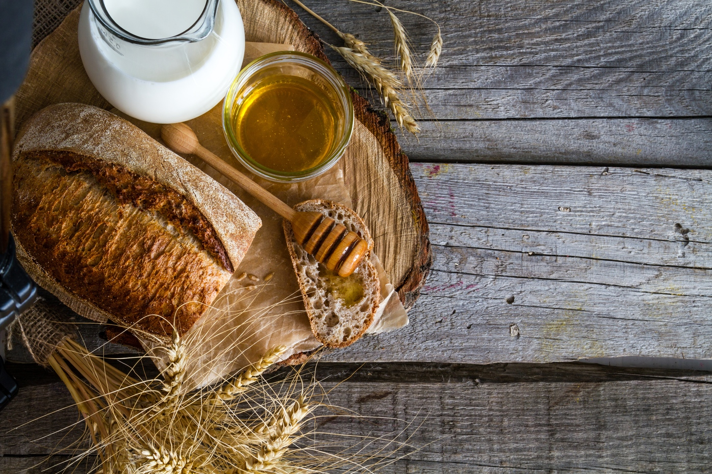
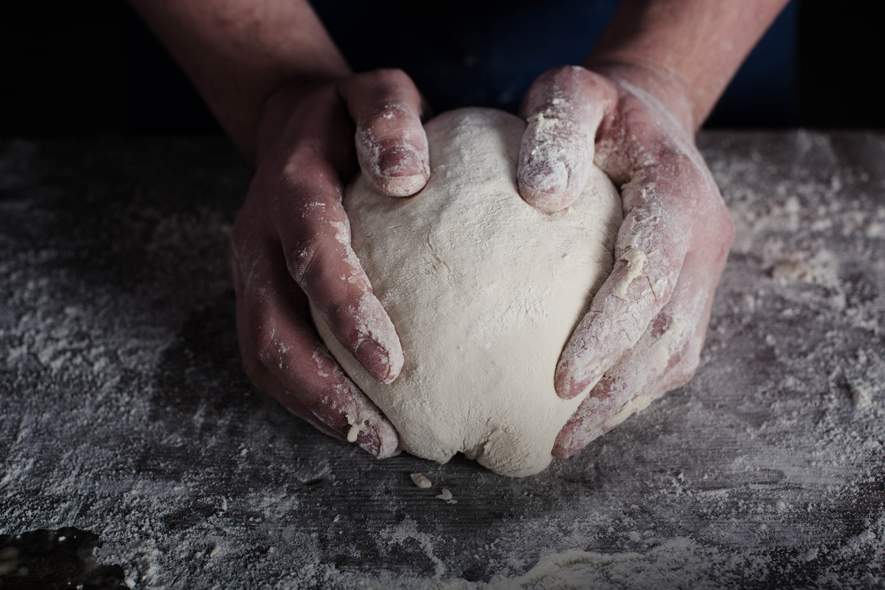
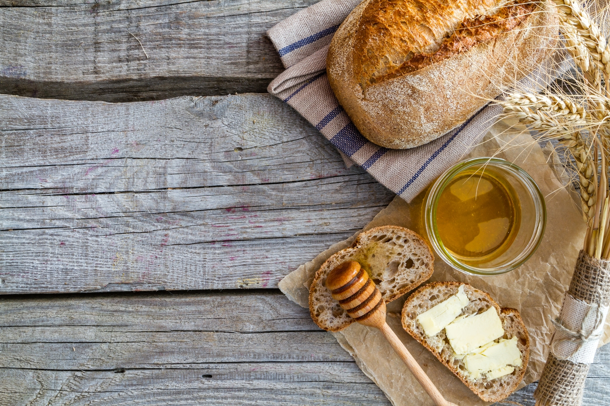
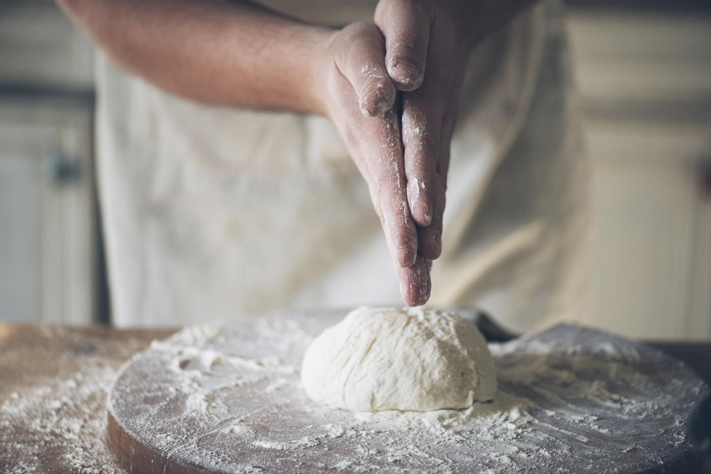

Handcrafted
WarmBread is the finest bakery in London known for its natural handcrafted breads.
We adhere to the highest quality standards while creating our food products so that each one brings delight to both your eye and tongue. Our menu regularly changes featuring seasonal meals carefully cooked by our exceptionally creative chefs.
Featured Breads
Quinoa Sourdough
Handmade from quinoa, soybeans, and soy flour, this kind of bread contains more protein than many others, and its mild taste makes it ideal to taste with salted butter.
Danish Sourdough
This popular full of texture and flavor Danish bread is healthy, tasty, and can be preserved for a long time. By tradition, it is served with cold butter, meat, fish, or cheese.
Cranberry Sourdough
Being a classic seasonal centerpiece, this nutritious bread is charged with cranberries and pecans. It can be perfectly combined with cooked meat or cheese.
Hove Wholemeal
This Hove inspired vegan wholemeal loaf is made from such organic ingredients as wholemeal wheat flour, oats, salt, and olive oil. It is ideal to create healthy sandwiches.
About Us
WarmBread Bakery proudly specializes in a uniquely handcrafted bread that is equal parts healthy and organic. Our bread is made of premium ingredients and fresh seasonal flavors packed with: spinach, carrots, berries, seeds, nuts, and other healthy goods.
WarmBread Bakery products are rich in protein, oils, nuts, and fibers that will keep you satisfied, healthy, and happy throughout the day.
  Our Bread Philosophy
We believe that bread, especially handmade and healthy bread, deserves great respect. Respect for the land, for our local farmers who raise and gather in the crops, and for bakers who bake bread by hand for us to enjoy at the table every day. From land to a table, bread is a symbol of our life cycle. We are passionate about creating nutritious and healthy bread to support your healthy lifestyle.
Our Process
Recipes Using Our Breads
Healthy Sandwiches
3 min preparation
Honey Roll-Ups
10 min preparation
Pizza Bagels
20 min preparation